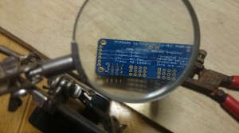

At IBM Impact 2013, we introduced the Liberty Car. We replaced the radio receiver in a radio controlled car with a Raspberry Pi. Then, with the help of WebSphere Liberty, we added hardware and software to make it possible to drive the car from any device with WiFi and a web browser. Part 1 describes how to build the hardware.

During the past year, we’ve been testing and experimenting with the Liberty Car.¬† Not least was taking the web application code used in the Liberty Car and modifying it so that it can work with any remote-controlled (RC) car with similar modifications. The code is now flexible enough to work with other cars and is now available on our GitHub page!
We’ve also been looking at the hardware used in the Liberty Car and, after lots of testing, we have a parts list that is a good compromise between cost, ease of implementation, and flexibility. So now you too can create your own Liberty Car!
In this article we’ll explain how to build the Liberty Car hardware.
Hardware shopping list
Here’s what we used to create our new batch of Liberty Cars. You can swap out some of the parts easily with functional equivalents but, for some, you’ll have to re-work our code.
| Part | Use | Alternatives |
|---|---|---|
| Car chassis (we use Tamiya TT-O2)Sometimes they come with a motor, ESC, servo, and radio transmitter/receiver. If it does, make sure the ESC and radio receiver are separate devices in the car and can be unplugged from each other. | The car chassis itself. | None. Unless you want to build a Liberty Boat (in which case, get a boat). |
| Motor | Moves the car forward and backward. | None. |
| ESC (Electronic Speed Controller)Make sure it is for use in RC cars and not RC boats. | Takes signal commands from the PWM board and sends power to the motor based on those commands. | None. |
| Servo | Steers the front wheels of the car. | Some cheaper RC cars have a motor at the front. Using a motor loses fine-grained control over where the wheels are facing (control will full left, full right, or forwards). |
| Raspberry Pi (Model B)256MB or 512MB are suitable. | Hosts and executes the code that controls the car. | You could use a Raspberry Pi model A but you would lose the ethernet port, which is used for the WiFi router. Could also use an alternative board as long as it can run Java and has GPIO/USB/ethernet. |
| SD card (we have 8GB which is more than enough)Get any size you want above 4GB. | Holds the operating system and code for the Raspberry Pi to run. | None. |
| WiFi router (we use the TP-link nano) | Gives the car its own WiFi network letting other devices connect to the car without needing an existing WiFi network. | Could be replaced with another WiFi router (easier if it can be powered over USB). Could be replaced with a USB WiFi dongle if you have an existing network you can connect the car to. |
| PWM controller board (we use Adafruit 16-channel 12-bit PWM/servo driver –i2c interface) | Takes the signal from the Raspberry Pi GPIO pins and sends PWM signals to the steering servo and ESC in the car telling them what to do. | Could be replaced with another PWM capable board. The Raspberry Pi can send 1 PWM signal in hardware and can create more through software tricks (though this can be tricky to get working). You only need 2 PWM signals to make the car work. |
| Ribbon cable cobbler | Nice way of connecting GPIO pins on the Raspberry Pi to the PWM controller. | Could use direct wiring instead. Having the ribbon cable makes it easy to connect/disconnect the Raspberry Pi from the car. |
| Voltage regulator board (we use LM2596 voltage regulator)Needs to be adjustable and to support 7.2v in and 5v out. | Takes the voltage from the car batteries (typically 7.2v) and converts it to 5v for the Raspberry Pi. | None. |
| Micro USB cable | We will be chopping off the USB male end of the cable and using it to connect the voltage regulator to the Raspberry Pi. | None. |
| Tamiya style Y plug adapter (as long as your battery has a Tamiya connector)Make sure the adapter matches the battery/ESC connection type. | Lets us split the one power output from the car battery into two. We can then send one line to the ESC/motor and the other to the voltage regulator. | You need to split the one output from the battery to two so using this makes it simple. You could just put extra wires coming out of the existing connections instead. |
| Ethernet & USB power for the WiFi router | Takes power and data from the Raspberry Pi to the WiFi router. | None. |
| Misc. wirePreferably 4 colours and about 5cm long in each colour | Will not need to take much current – only working at 5v. Takes voltage and signal from ribbon cobbler board to PWM controller board | None |
| Battery for RC car (we use NiMh 7.2v Tamiya batteries which are very common) | Powers the whole setup | None |
| Battery charger for battery | Charges the battery | None |
Once you have all of the above parts (or suitable alternatives), you can start building your Liberty Car!
Building the car
Make sure you have the following tools:
- Soldering iron and solder
- Wire cutters
- Wire strippers
- Voltmeter (DC voltage)
- Any tools needed in the RC car chassis construction (depends on the car/kit you get)
Tip: Make sure that none of the separate circuit boards come into contact when plugging everything in and avoid short-circuiting the boards.
- Assemble the car chassis (including adding the ESC, motor, and steering servo). This might not be necessary if the car you have is pre-assembled. If you car comes with a radio transmitter/receiver, remove it from the car and unplug the servo and ESC.
- Take the Tamiya style Y plug adapter and cut one of the male ends off the adapter.
- Strip the end of the adapter from which you removed the male connector, then solder it to the input + and – terminals on the voltage regulator (red = positive, black = negative).
- Charge the battery and attach it to the female end of the splitter cable.
- Take your voltmeter in DC mode and read the voltage on the output terminals of the voltage regulator. Adjust the voltage regulator until the voltmeter reads 5v output from the voltage regulator.
- Take the micro USB cable to power the Raspberry Pi and remove the full size male end of the cable, leaving as much length on the cable from the micro USB end as is needed (I normally leave ~20cm).
- Strip the end of the cable from which you removed the full size connector. You should find four wires. You only need the red and black (power) so remove the other 2 and strip back the red and black cables so we can solder them.
- Attach the red and black cables to the positive and negative output from the voltage regulator (red = positive, black = negative).
- You should now be able to plug the battery into the Y splitter cable and the micro USB end from the voltage regulator into the Raspberry Pi and see it start to boot up (red and yellow lights). Congratulations, you just set up the power conversion for the whole setup!
- Unplug the Raspberry Pi micro USB cable before continuing.
- The PWM controller board from Adafruit normally comes without the pins soldered on, so solder one group of pins to some of the output channels on the board (refer to the photo for which pins we attach – normally channels 12 through 15). This is tricky as you need to solder each individual pin whilst avoiding letting solder from the different pins create a connection between the pins (which would create a short circuit).
 - Take the ribbon cable cobbler board and four wires ~5cm in length (preferably a different colour for each to make things easy). Attach one wire between each of the following connections (left side being on the cobbler, and right side being on the PWM board):
- GND -> GND
- SCL -> SCL
- SDA ->SDA
- Plug the ethernet and WiFi router USB power cable into the Raspberry Pi. It doesn’t matter which of the two USB ports on the Pi you use to supply power.
- Plug the SD card with a Raspberry Pi OS installed (we use Raspbian) into the SD card slot on the Raspberry Pi.
- Plug the ribbon cable onto the Raspberry Pi GPIO pins. Make sure the “lump” on the long side of the ribbon cable is facing towards the inside of the Pi and not away from the Pi.
- Plug the ribbon cable into the ribbon cable cobbler board you just attached to the PWM controller. It should only fit into the ribbon cobbler board one way.
- Plug the servo cable on to channel 14 on the PWM controller. The servo will plug in vertically with the white wire on top.
- Plug the ESC cable on to channel 15 on the PWM controller. The ESC will plug in vertically with the white wire on top
- Make sure the ESC is switched off (if you have a switch), then plug the splitter cable into the ESC power input.
- Plug the micro USB cable from the voltage regulator into the Raspberry Pi. If the battery is still connected the whole setup should now power on. If not, plug in the charged battery.
- The whole setup should look like this:
- Check that the PWM board has a green LED illuminated.
- Check that the Raspberry Pi has at least 1 solid red LED on and at least one of the other LEDs is flickering.
- If you do not see the LEDs in steps 17 and 18 check that all cables, the ribbon cable, and all soldered points are making good contact and are not loose or short circuiting.
{kind=link}
{kind=link}
{kind=link}
{kind=link}
{kind=link}
{kind=link}
{kind=link}
{kind=link}
{kind=link}
In the next article, we describe how to set up the Liberty Car software.